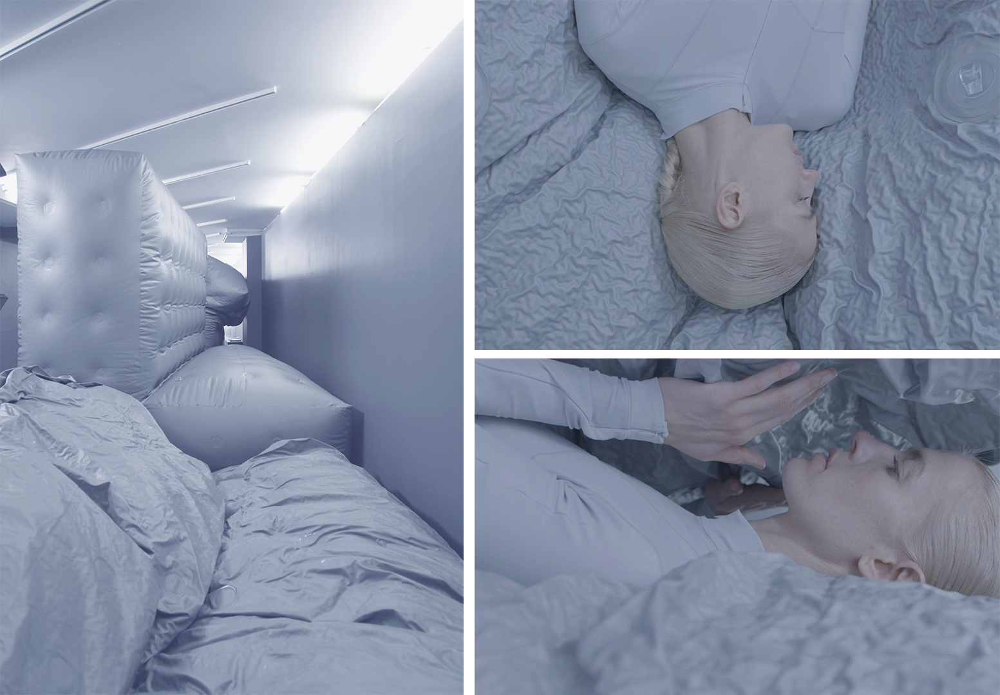

<!DOCTYPE html>
<html lang="en">
  <head>
    <meta name="description">
    <meta name="keywords" content="responsive, grid, system, web design">
    <meta name="author" content="responsive, grid, system, web design">
    <meta http-equiv="cleartype" content="on">
    <meta name="HandheldFriendly" content="True">
    <meta name="MobileOptimized" content="320">
    <meta name="viewport" content="width=device-width, initial-scale=1.0">
    <link rel="stylesheet" href="/assets/css/html5reset.css" media="all">
    <link rel="stylesheet" href="/assets/css/col.css" media="all">
    <link rel="stylesheet" href="/assets/css/2cols.css" media="all">
    <link rel="stylesheet" href="/assets/css/3cols.css" media="all">
    <link rel="stylesheet" href="/assets/css/4cols.css" media="all">
    <link rel="stylesheet" href="/assets/css/5cols.css" media="all">
    <link rel="stylesheet" href="/assets/css/6cols.css" media="all">
    <link rel="stylesheet" href="/assets/css/7cols.css" media="all">
    <link rel="stylesheet" href="/assets/css/8cols.css" media="all">
    <link rel="stylesheet" href="/assets/css/9cols.css" media="all">
    <link rel="stylesheet" href="/assets/css/10cols.css" media="all">
    <link rel="stylesheet" href="/assets/css/11cols.css" media="all">
    <link rel="stylesheet" href="/assets/css/12cols.css" media="all">
    <link rel="stylesheet" href="/assets/css/style.css">
    <link rel="stylesheet" href="/assets/css/animate.css">
    <link rel="stylesheet" type="text/css" href="/assets/css/component.css">
    <link rel="stylesheet" type="text/css" href="/assets/css/glslEditor.css">
    <link rel="stylesheet" type="text/css" href="/assets/css/codeCanvas.css">
    <link rel="stylesheet" type="text/css" href="https://maxcdn.bootstrapcdn.com/font-awesome/4.4.0/css/font-awesome.min.css">
    <title>Jaskirat Portfolio   </title><script src="/assets/js/modernizr.custom.js"></script>
  </head>
</html>
<body>
  <div id="st-container" class="st-container">
    <div class="st-pusher">
      <nav id="menu-7" class="st-menu st-effect-7">
        <h2 class="icon icon-lab logo"><span>JASKIRAT R </span></h2>
<ul class="menu">
  <li><a href="/" class="hvr-underline-from-center">Home</a></li>
  <li><a href="/projects/" class="hvr-underline-from-center">Projects</a></li>
  <li><a href="/about/" class="hvr-underline-from-center">About</a></li>
  <li><a href="http://jaskiratr.tumblr.com" class="hvr-underline-from-center">Blog </a></li>
</ul>
      </nav>
      <div class="st-content">
        <div class="main clearfix">
          <div id="st-trigger-effects" class="column"><a id="nav-toggle" href="#" data-effect="st-effect-7"><span></span></a></div>
        </div>
        <div class="st-content-inner">
          <div class="width_80">
            <div class="section group header">
              <div class="col span_1_of_3 logo"><a href="http://jaskirat.me"><span>JASKIRAT R </span></a></div>
              <div class="col span_3_of_2 topNav">
<ul class="menu">
  <li><a href="/" class="hvr-underline-from-center">Home</a></li>
  <li><a href="/projects/" class="hvr-underline-from-center">Projects</a></li>
  <li><a href="/about/" class="hvr-underline-from-center">About</a></li>
  <li><a href="http://jaskiratr.tumblr.com" class="hvr-underline-from-center">Blog </a></li>
</ul>
              </div>
            </div>
            <div class="section group subheader">
              <h1>JB 1.0 : Jamming Bodies</h1><br>
              <h3>
                <p>Storefront Gallery for Art &amp; Architecture</p>
              </h3><br><p>Self-Assembly Lab, MIT + Lucy McRae + Storefront Gallery for Art &amp; Architecture
<br>
MIT Project Team: Skylar Tibbits, Jared Laucks, Jaskirat Randhawa, Athina Papadopoulou, Dimitris Mairopoulos, Lina Kara&#39;in, Christophe Guberan, Sulaiman Alothman, Kate Weishaar</p>
<p><style>.embed-container { position: relative; padding-bottom: 56.25%; height: 0; overflow: hidden; max-width: 100%; } .embed-container iframe, .embed-container object, .embed-container embed { position: absolute; top: 0; left: 0; width: 100%; height: 100%; }</style><div class='embed-container'><iframe src='https://www.youtube.com/embed/lgHoNrnRUtY' frameborder='0' allowfullscreen></iframe></div></p>
<div class="section group">
<div class="col span_1_of_2">
<br></div>
<div class="col span_1_of_2">
<p>
JB1.0: Jamming Bodies is an immersive installation that transforms Storefront&#39;s gallery space into a laboratory. It collapses architecture, technology, and art into a single object. While skin usually demarcates the transition between exterior and interior, this experimental installation transforms skin into a membrane that operates as both.
</p>
<p>
    As the walls deflate, they become hard. Inflate them, and they are soft. The result over time is a pulsating room that can be tuned for stiffness, reconfigured on demand and which confuses the distinction between our skin and our walls.
</p>
</div>
</div>

<p></p>
<p></p>
<!-- 
<div class="section group">
<div class="col span_1_of_3">

    
</div>
<div class="col span_2_of_3">
<p>
My contribution ranged from various managerial duties to technical implementation of the project. First, I was involved in the material testing and the strategic development of the installation. During the later stages of development, my role shifted to visualizing and building the electronics and tubing setup. The setup was designed for 5 bladders. It involved tubing of more than 400 feet, 3 Vacuum pumps that doubled as inflation pumps, more than 50 relay valves and other miscellaneous accessories.
</p>
<p>
I later collaborated closely with the team to manage and time the sequence of inflation- deflation cycles. Since the interactions are very personal for the audience, timing was a key element to get the ambient experience of the amorphous environment.
</p>


</div>
</div>
-->
            </div>
            <div class="section group footnote">
              <hr>
              <div class="iconSet"><a href="http://www.github.com/jaskiratr" target="_blank"><i class="fa fa-github-square fa-lg"></i></a><a href="http://www.vimeo.com/jaskiratr" target="_blank"><i class="fa fa-vimeo-square fa-lg"></i></a><a href="http://www.jaskiratr.tumblr.com" target="_blank"><i class="fa fa-tumblr-square fa-lg"></i></a><a href="http://www.linkedin.com/in/jaskiratr" target="_blank"><i class="fa fa-linkedin-square fa-lg"></i></a></div>
            </div>
          </div>
        </div>
      </div>
    </div>
  </div>
<script src="/assets/js/jquery.min.js"></script>
<script src="/assets/js/masonry.pkgd.js"></script>
<script src="/assets/js/imagesloaded.pkgd.js"></script>
<script src="/assets/js/index.js"></script>
<script src="/assets/js/classie.js"></script>
<script src="/assets/js/sidebarEffects.js"></script>
<script src="/assets/js/tracking.js"></script>
<script src="/assets/js/glslEditor.js"></script>
<script src="/assets/js/glslEditorFooter.js"></script>
</body>